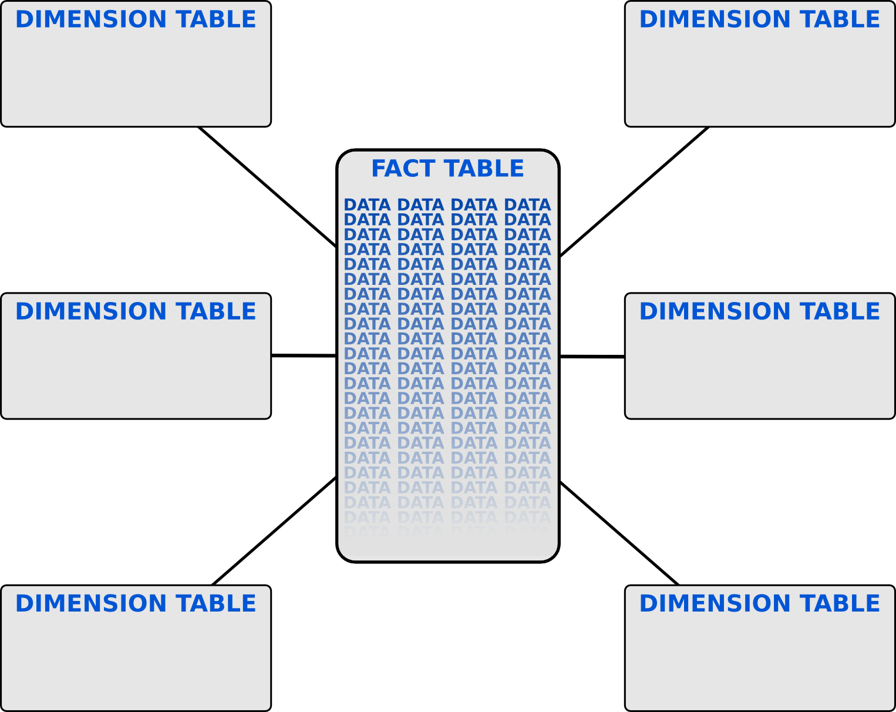

Data warehousing basics
Joshua Tolley
End Point Corporation
This is not the first slide. I promise.
Data Warehousing for Dummies

Data Warehousing for Fairly Intelligent Beginners
Remember the rules you learned in your first class on databases?
- Tables represent objects in your system
- Customers, Orders, Products...
- Normalize everything, using "normal forms" (1NF, 2NF, etc.)
- Always define proper constraints to keep your data clean
- Unique and not null constraints, foreign and primary keys, natural vs. surrogate keys
These rules work great for some kinds of databases...
...but they're lousy for other kinds.
There are different kinds of databases?

Database types
In general, databases can be categorized by:
- the type of data they hold;
- how those data relate to each other;
- whether transactions are useful;
- if the data are modified, or constant;
- and how the data are queried.
These types are not necessarily mutually exclusive.
Database types: OLTP
- On-line transaction processing
- Lots of simple, fast queries involving few records
- Transactions can be very important
- Data are frequently added, modified, and deleted
- Typical for backing an application
Database types: Document store
- Often unstructured data
- Entries consist of JSON, YAML, XML, etc.
- Documents don't necessarily have a defined relationship with other documents
Database types: BLAST
- Basic Local Alignment Search Tool
- Used for genome and protein research
- Data elements consist of protein or genetic sequences
- Searches are fuzzy, based on sequence similarity
Database types: Key/Value
- Memcached, MUMPS
- Similar to a hash or dictionary object
- Extremely common, but rarely considered a database
- Each object has a unique key; lookups are based on that key
Database types: OLAP
- On-Line Analytical Processing
- Commonly used to identify data warehouses
- Queries are read-only, and involve large chunks of data taken from a long period of time
- Special schema design to allow good performance with large data sets, and query tools
OLAP Schema Design: Dimensions and Measures
The database consists of dimensions and measures).
Dimensions generally include discreet values, and are used to
group or filter data items. For instance, Age Group,
Country, or Gender.
Measures are typically continuous numeric values, and are
viewed in aggregate form. On a report, we're usually interested in the
measures' calculated values. Examples include Sale price and
Inventory.
OLAP Schema Design: Dimensions and Measures
| Region |
Date |
Price |
| Eastern |
2 Feb 2014 |
$100 |
| Northern |
14 Jan 2014 |
$250 |
| Western |
10 Jan 2014 |
$195 |
| Eastern |
19 Feb 2014 |
$210 |
Region and Date are dimensions; Price is a measure.
OLAP Schema Design: Star Schema
Actual database structure involves two table types: Fact tables
and Dimension tables. Dimension tables are small, and
contain discreet dimension values. Fact tables contain measures'
values, and foreign keys pointing to the dimension tables. This makes a
star-like design.
OLAP Schema Design: Star Schema

OLAP Schema Design: Star Schema
Tables in a star schema commonly use synthetic primary keys, include
few integrity constraints, and break all the usual normalization rules.
OLAP Schema Design: ETL
You'll probably need to build an
ETL (Extraction,
Transformation, and Loading) process to move data from OLTP databases
into the warehouse. This may involve:
- Talking to several data sources with different interfaces
- Tracking changes so only changed data gets processed
- Determining how often to update the warehouse
- Preserving old data in the face of changing dimensions ("This customer's address just changed")
Designing Stars: Grain
- Describes categorially exactly what the fact table represents, at its finest detail
- Must be clearly defined, as the first step of design
- Allows designers to determine which measures and dimensions are possible for a fact table
- To answer questions for measures and dimensions that aren't possible for a given fact table, you'll need to find another fact table to use
Designing Stars: Grain
It's common to have multiple stars, with different grains, to answer different kinds of questions
, but build them one at a time!
Examples: Retail Sales
Grain: A single customer purchase
- Dimensions include Date, Customer, Location
- Measures include Purchase Price and perhaps others based on the business
- Individual order line items are not part of this grain
Examples: Retail Sales
Grain: Monthly inventory
- Dimensions include Month, Location, and SKU
- Measures include Total Inventory and possibly Current Unit Price
- No mention of customers in this star
Examples: Hospital Care
Possible grains include
- Treatment outcomes
- Length of stay
- Monthly rooms available
- Provider scheduling
Figure out what question you want to answer, then come up with a grain that will answer it.
There's lots of software for this stuff. We'll just talk about one, called Pentaho.
Pentaho
- http://www.pentaho.com
- Exists as Community and Commercial versions
- Allows several different styles of reporting
- Includes tools for ETL and data mining
Any questions?
Josh Tolley, https://blog.endpoint.com